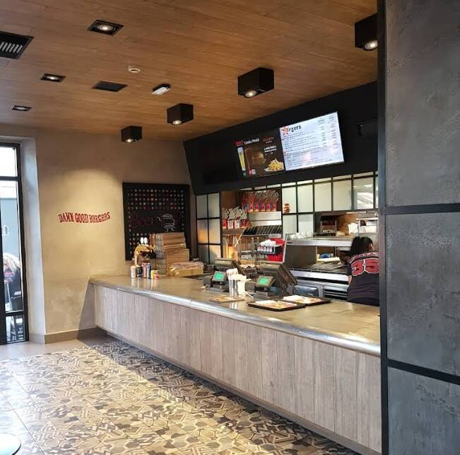

Kos-stad / Lambi
Fastfood
Over deze plek
Burger King is de enige internationaal bekende fastfoodketen op Kos. Het bevindt zich achter de douane op het vliegveld. Dit betekent dat je alleen van hun bekende burgers en frietjes kunt genieten als je op het punt staat om te vertrekken.

Openingstijden
Openingstijden wisselen per seizoen. Check ter plaatse of bel even voor de actuele tijden.